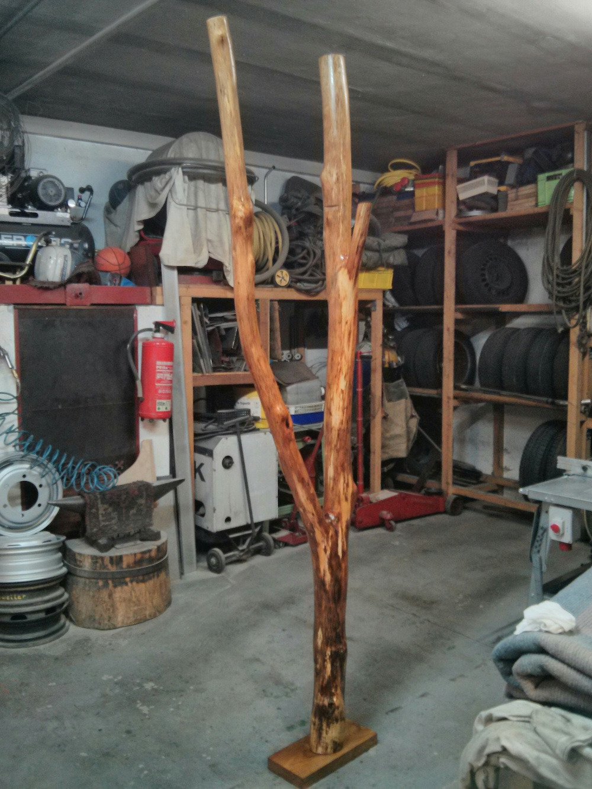
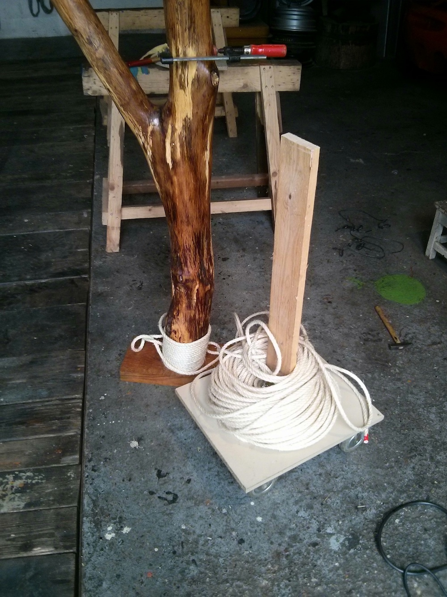
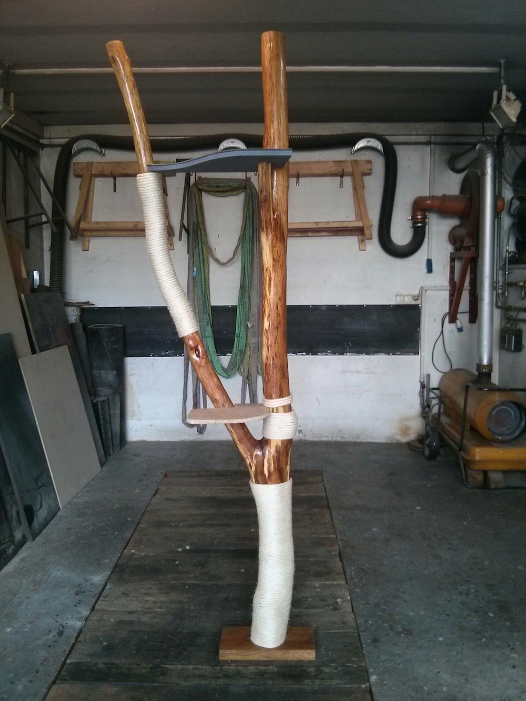
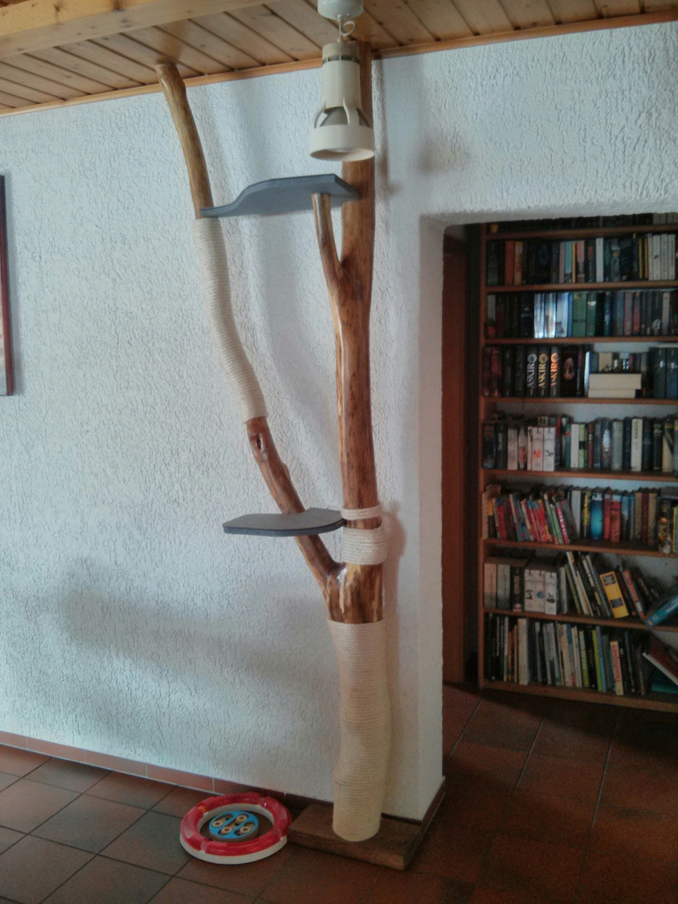

tgauweiler / CatTree
Introduction
After the cat utterly destroyed her old cat tree it was time to build a new better one.
Building
I found a suitable branch with a nice forking.
First step was to remove all bark, which was very time consuming.
After that i sanded the wood down to remove all hard edges and wiped it down with oil.
Then i added a piece of wood as stand and we have our standing tree.

Now it was time to add some sisal rope for scratching.

Next came two platforms to lie on and again some rope as climbing help.

Finally i could move it in place and had to again shorted it a bit to really fit under the ceiling and secured it with a wedge.

Conclusion
It was a fun wood project. Removing the bark was really time consuming without a proper tool. The cat loves her new scratching post, but refuses to climb to the platforms..